Case 022026Raymind.AI
memory.wikiSwitch AI tools, keep your context
A knowledge store that gives any AI the same material with the same context. I planned, designed and built it on my own, and shipped it to nine surfaces: the web, Mac, iPhone and Android apps, Chrome, Safari and VS Code extensions, a CLI and an MCP server.
memory.wiki↗- Role
- Solo build. Planning, product design, development
- Period
- March to September 2026
- Shipped on
- App Store, Google Play, Chrome Web Store, VS Code Marketplace, npm
- AIs that read it
- Claude, ChatGPT, Gemini, Cursor and more
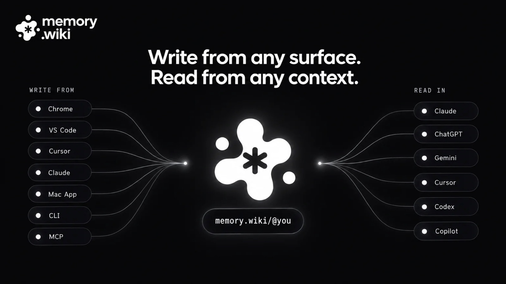
About the project
Documents gathered in memory.wiki go to any AI as they are, through one URL. Context built up in Claude does not have to be explained again from scratch in ChatGPT or Cursor.
I built it on my own, doing all of the planning, product design and development with Claude Code. I used it every day in my own work and added each surface as the need came up. Before anything else, I settled on one data layer and one renderer, so the experience would not split as surfaces multiplied.
- Development
- Solo build with Claude Code
- One renderer
- Web, the Chrome and VS Code extensions, CLI, MCP server and Mac app, all on one data layer and one renderer
- MCP server
- 29 tools that AI uses directly
- Distribution
- App Store (Mac, iPhone, Safari extension), Google Play, VS Code Marketplace, Chrome Web Store, npm
- Validation
- A benchmark I designed that asks three AIs the same questions
- The user problem I set out to solve
- Work done with an AI disappears the moment you close the tab. Users explain the same context to Claude, then to Cursor, then to Claude again a month later.
- Why it mattered
- People were doing more and more with AI, yet nothing was building up. For people and organisations that use several AIs, context is their biggest asset, and it was locked inside each tool.
- How I went about it, and what I chose
- I made a single URL the product, not an app. Material is captured where the work happens, AI organises it in the background, and any AI can read it from one URL.
- Results and what I learned
- Tested on the same material, all three AIs scored 95% accuracy, and their answers agreed with each other 93.3% of the time. I learned that consistency comes from data and rules, not from screens.
from the web to an MCP server
AI uses directly
material placed in the prompt
Write it once, and it is the same document wherever you open it.
A document gets its URL the moment you write it in the editor. You can open and edit the same document in VS Code, Chrome, the Mac app, the terminal or an AI tool, and wherever you open it, the same renderer shows it the same way. On the go, the iPhone and Android apps and the Safari extension capture and read.
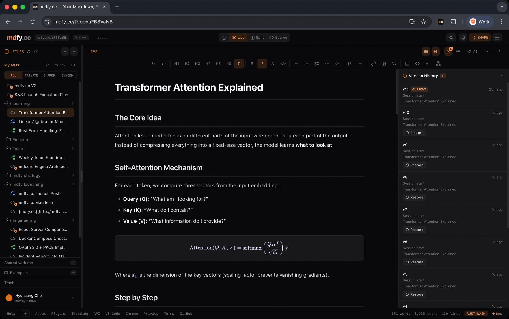
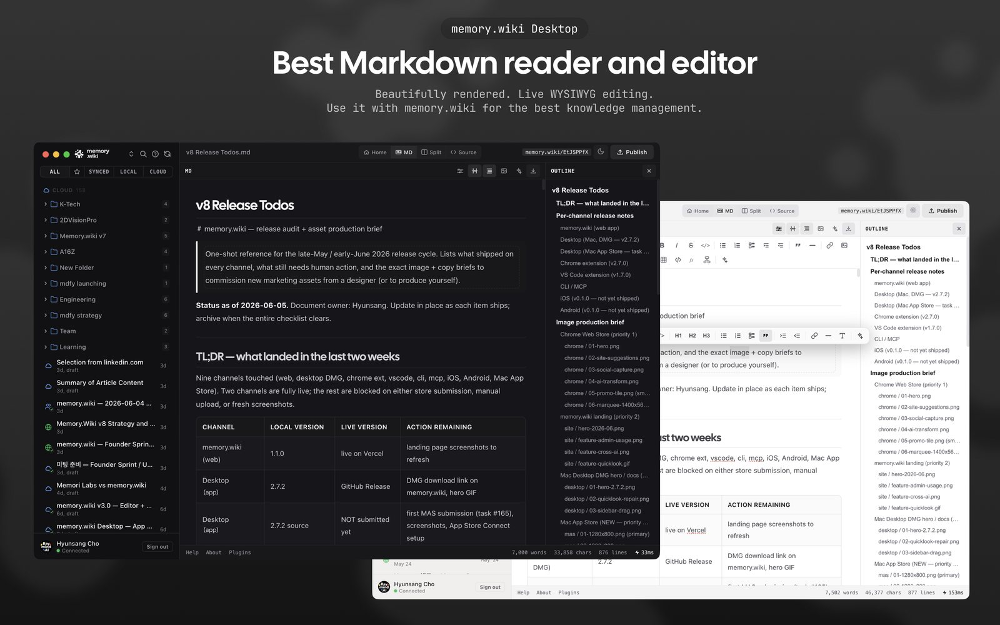
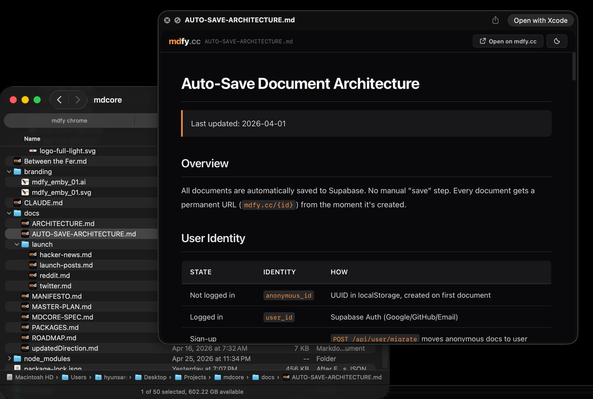
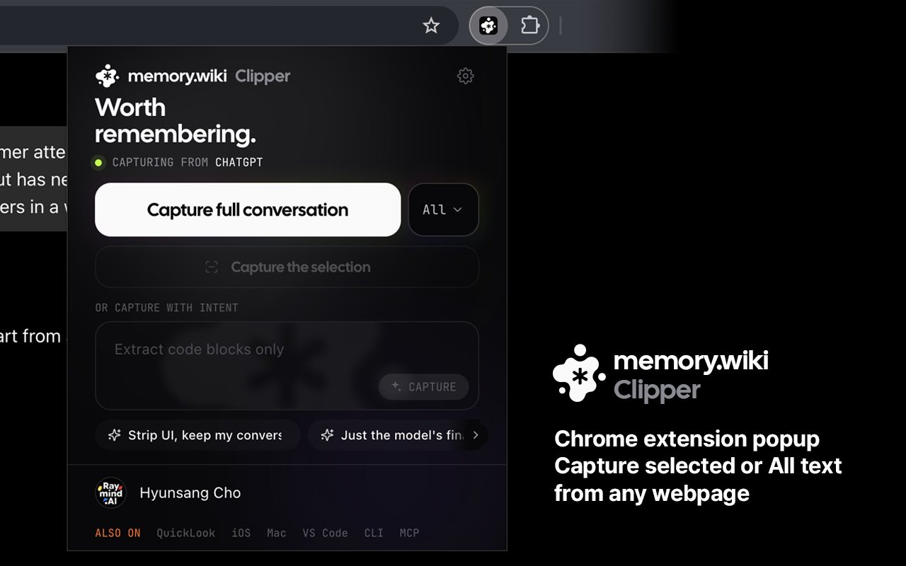
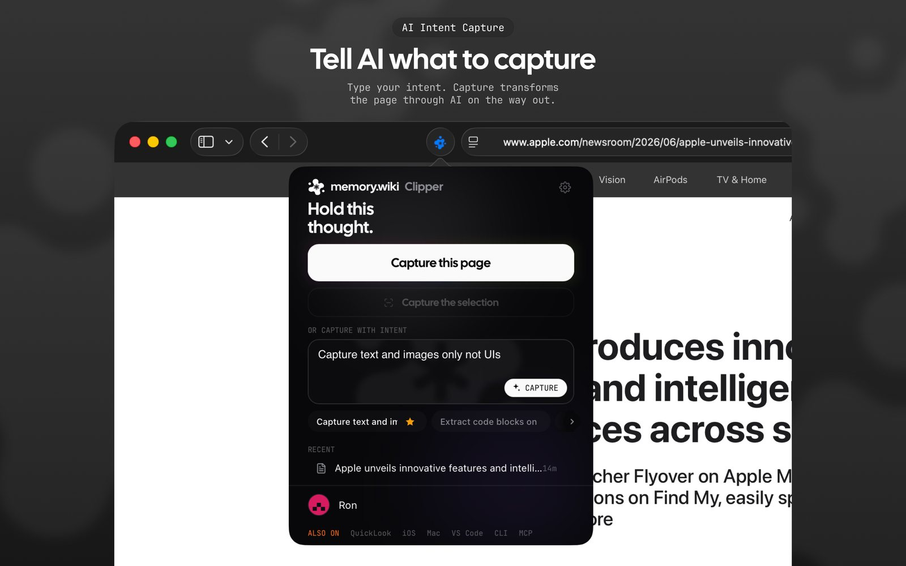
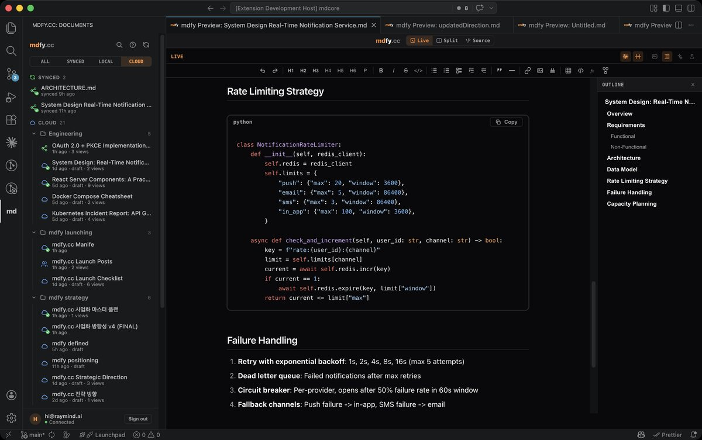
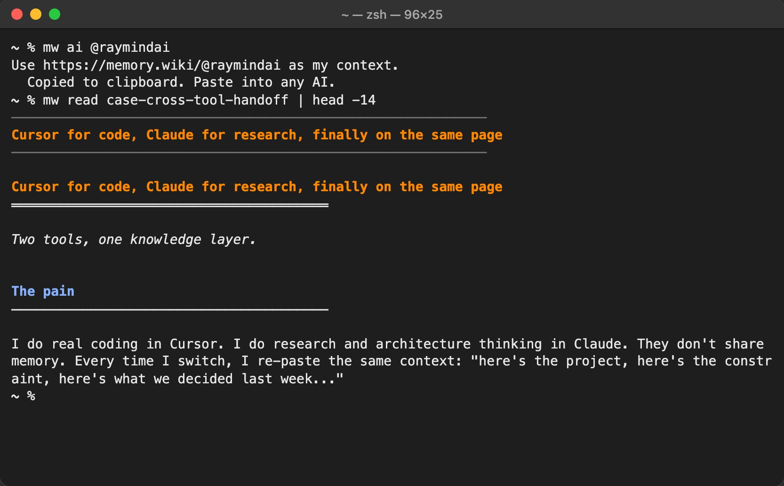
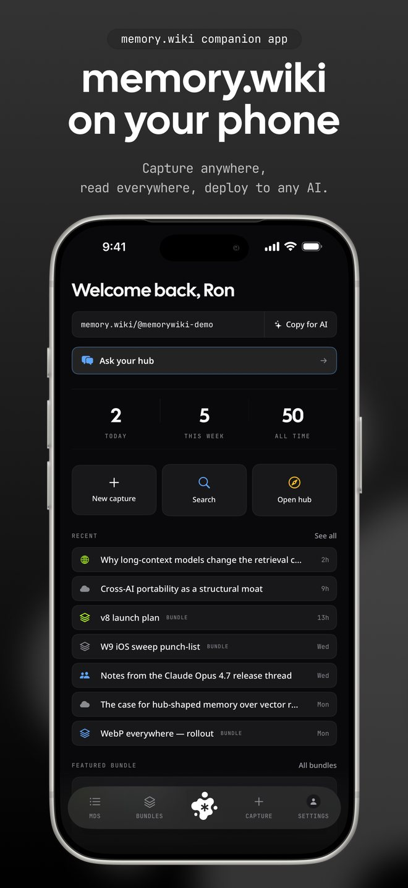
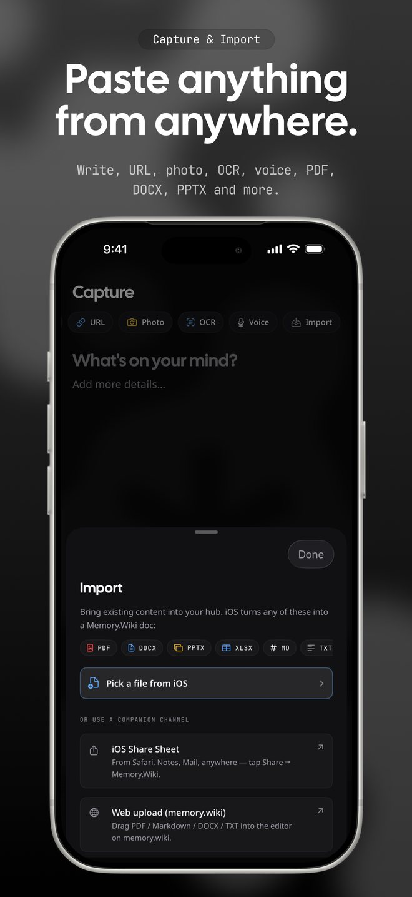
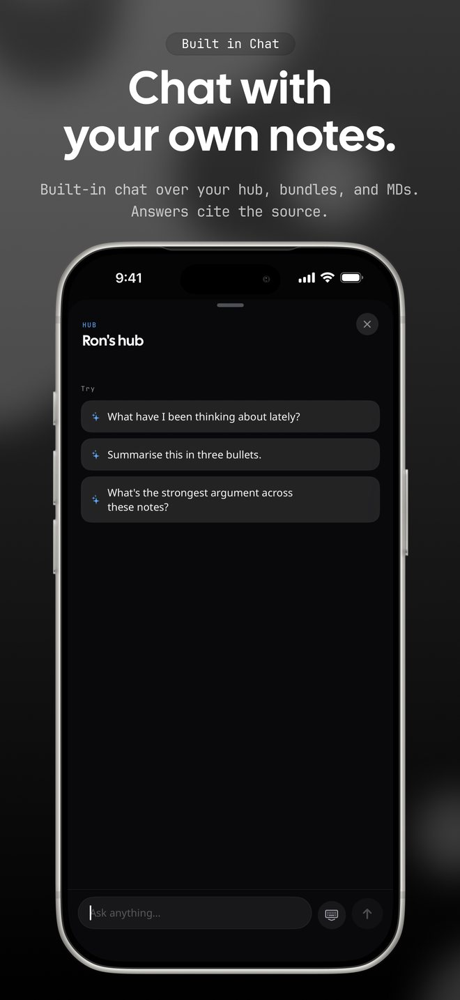
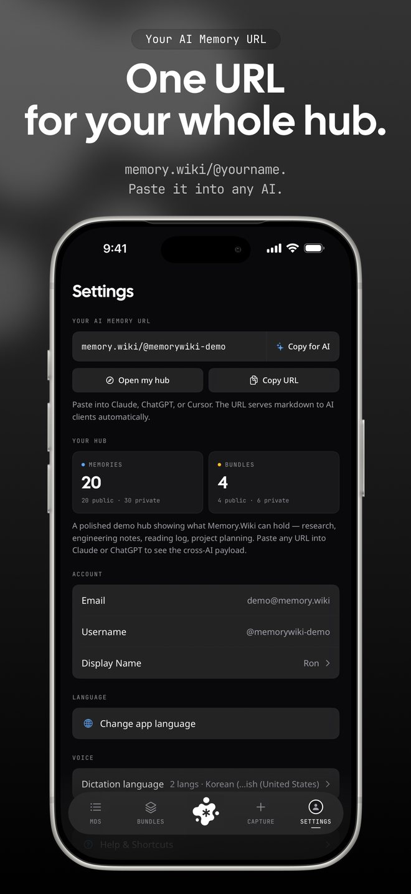
People were doing more with AI, but nothing was building up.
Most of the work done with AI disappears the moment the tab closes. So we explain the same context to Claude again, then to Cursor, then to Claude once more a month later.
I am a case in point. I try every new model and tool as soon as it comes out, and I use a different AI for different jobs. Every time I switched tools, the context started again from scratch. The amount of work I did with AI kept growing, and the amount that built up was zero.
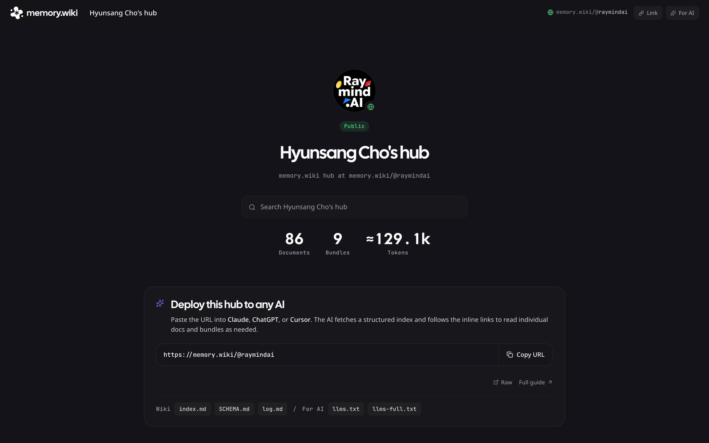
Context is an asset, and it was locked inside each tool.
People do not stay with one AI
Each AI is good at different things, so people use different AIs for different jobs. Each AI's memory lives only inside that AI, so the context breaks every time the tool changes.
Re-explaining eats time
Pasting in the same background every time looks small, but the more you use AI, the more it becomes the task you repeat most.
Same material should mean the same answer
When AIs read the same material and answer differently, people do not know what to believe. The same goes for products. Trust comes when the app, the notifications and the AI's answers all give the same numbers in the same words.
I made a single URL the product, not an app.
One URL, a way in for any AI
Paste a memory.wiki URL into an AI and a clean document comes back that the AI can read as it is. Nothing to install, no format to learn. Every other feature exists to make that document more useful.
Capture where the work happens
Capture straight from Chrome, VS Code, Cursor, Claude, the Mac app, the CLI or MCP. I added each one as I needed it in my own daily use.
AI organises in the background, people set the structure
There are three levels: documents, bundles and the hub. Each bundle gets topics and a relationship graph drawn out by AI, and the hub links the concepts across every bundle. People only decide the structure.
Every surface reads the same data
The web, the extensions, the Mac app and the document an AI receives all use the same renderer and the same graph. The graph you see on screen is exactly what the AI receives.
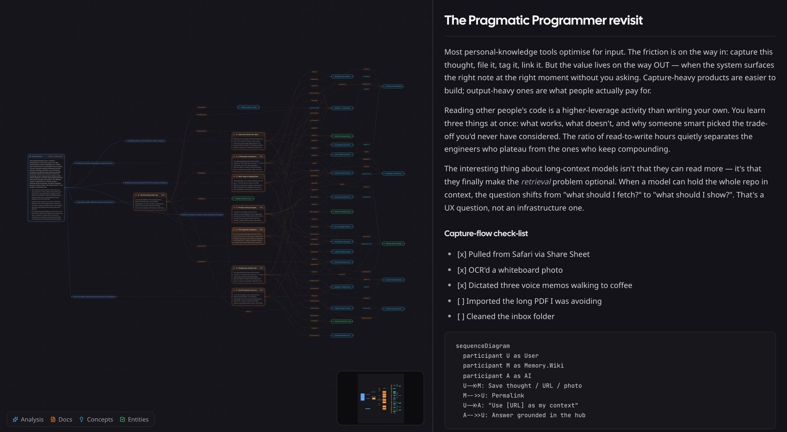
Trust rules live on the data side
Drafts never go out on a public URL, and permissions are checked where documents are served. Whether the reader is a browser or an AI, the same rules apply. When a graph is older than its documents, it is marked so the AI can tell. A URL, once made, never expires.
The same questions to three AIs
I built a benchmark that tests Claude,
One token source for every platform
Colour, type, spacing, radii and motion live in one set of design tokens. From the light and dark semantic colours, Style Dictionary generates CSS for the web, the Mac app and the VS Code extension, Swift for the iPhone app and Kotlin for the Android app, and each generated file says it must never be edited by hand.
It started with a bug. A palette of 16 accent colours was kept by hand in four places: the web settings, the stylesheet, the server's list of allowed values and the Android enum. The server copy was the one that got forgotten, so a colour picked on Android silently failed to save. I made one JSON file the only place to add or rename a colour, and the web, the server and Android now read what it generates. On Android the picker also paints a chip, a link and a selected card in the chosen colour, so a tap shows what is about to change.
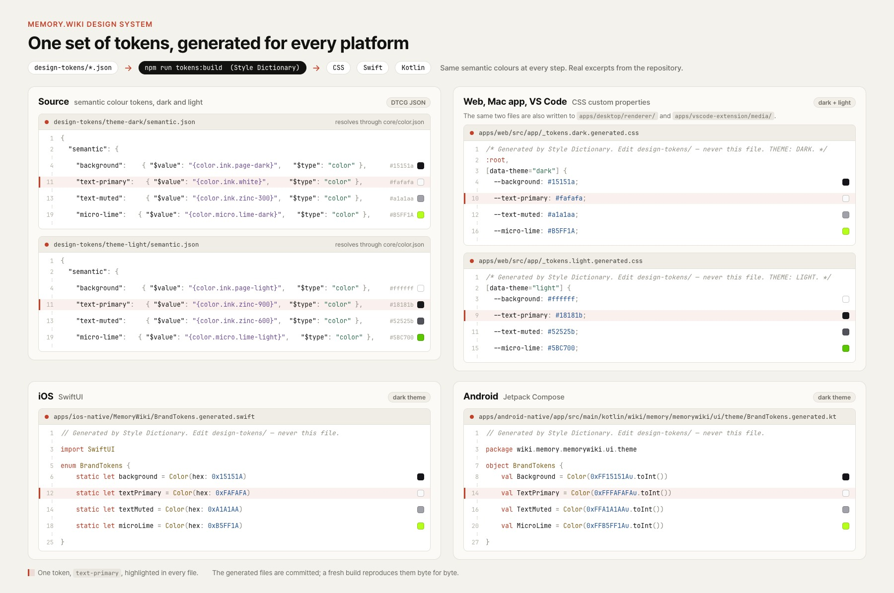
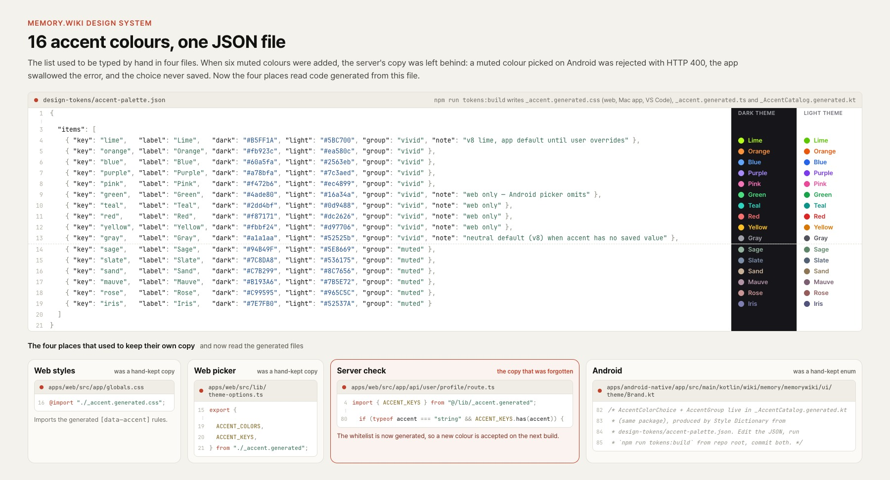
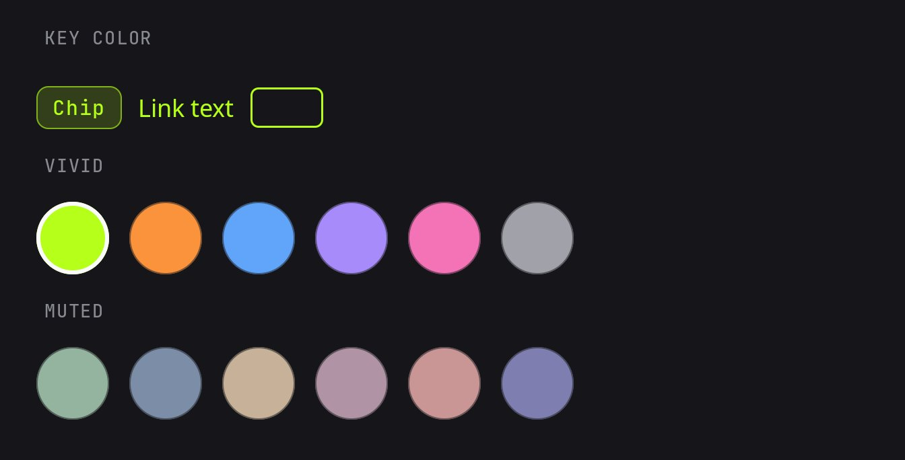
Three AIs read the same material and gave the same answers.
Accuracy for each of Claude,
How often the answers of the three AIs, reading the same material, agreed with each other.
Measured in May 2026 on 71 public documents and 20 questions I wrote. The material was placed directly in the prompt, so this is a ceiling. The real path, where an AI gets only the URL and reads it on its own, is left for the next measurement.
Shipped surfaces
- Webmemory.wiki
- Mac app and Quick LookMac App Store
- iPhone appApp Store
- Android appGoogle Play
- Chrome extensionChrome Web Store
- Safari extensionApp Store
- VS Code extensionMarketplace
- CLI and MCP servernpm
Four things I learned keeping one experience across many surfaces and many AIs
-
01
Delivery, more than technology, is the product
Anyone can improve search accuracy, but I judged that a way of giving any AI the same context through one URL is hard to copy. So instead of keeping the graph inside the app, I put it inside the document the AI receives.
-
02
Consistency comes from data and rules, not screens
Once the web, the extensions, the Mac app and the document an AI receives used the same renderer and read the same graph, the problem of the editor and the viewer looking different went away by design. Colour and spacing are managed as tokens, so light and dark modes come out of one system.
-
03
A score under ideal conditions is a ceiling
95% was the score with the material placed directly in the prompt. I noted in the results table that the real path, where an AI gets only the URL and reads it on its own, has to be measured separately.
-
04
Trust rules are kept in the data layer
Once permissions were checked where documents are served rather than on each screen, browsers, extensions and AIs all followed the same rules, and new surfaces did not open gaps in them.